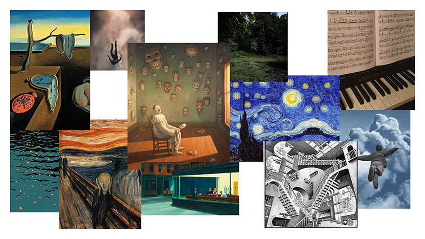
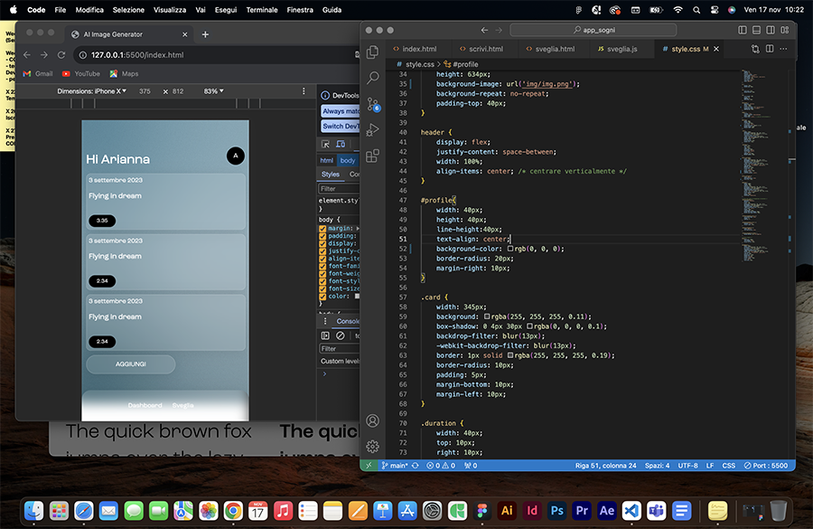
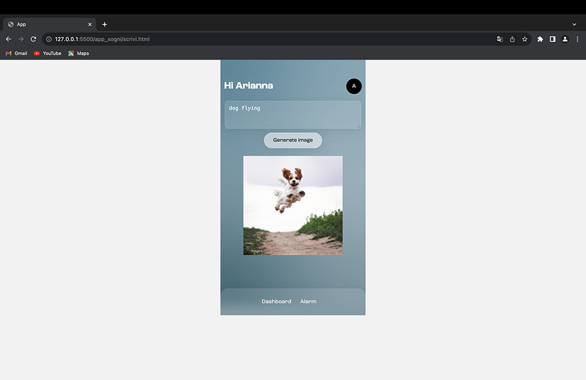

Arianna Stöckli
Dream Imager
The objective was to create an original virtual or physical tool. I developed an app that transforms the user's dreams into visual images using artificial intelligence. This app also acts as an alarm clock, allowing users to set it or be woken up randomly during the night. In addition, the app acts as a dream archive, allowing users to keep track of their dreams and the corresponding images generated. It was used by DALL-E to make the images.
TOOL PRESENTATION
SCREENS
1. Dashboard - Dream archive
2. Dream detail screen
3/4. Screen to generate image from the prompt
5/6. Alarm screen
INITIAL IDEA
I started with the idea of creating sounds inspired by a dream description. I created a moodboard with the intention of evoking dreamlike feelings, using images of artworks by artists such as Salvador Dalí, Edvard Munch and Edward Hopper, who are known for capturing surreal and suggestive atmospheres.
ARCHIVE
The archive page allows you to keep track of your dreams, providing key information such as the date, the time it was recorded and the title associated with each dream.
Detailed screen with dream transcript and generated image.
IMAGE GENERATION
The image is generated by clicking on the 'generate image' button after writing a description of your dream.
ALARM CLOCK
The wake-up screen allows you to set the desired time to be woken up and later enter the details of the dream.

Alarm clock operation.
TECHNOLOGY USED
The technology used is DALL-E, an artificial intelligence model created by OpenAI, which specialises in generating realistic images based on text descriptions.
Implementation of AI in the code.
BACKSTAGE
I started making several tests for the interface using Figma.
I begin the implementation of the layout by writing code.
 Tests of image generation.